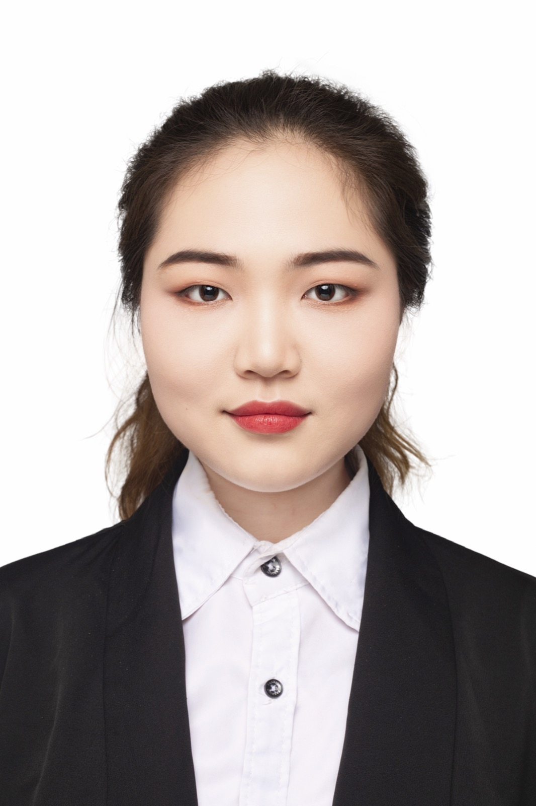

RNA biology and AGO2 eCLIP
Building human miRNA-mRNA interaction resources and CLIP-seq workflows on SGE/HPC.
Ph.D. Candidate · Molecular Medicine · University of Iowa
A molecular medicine Ph.D. student growing into the space between bioinformatics, molecular biology and translational medicine.

Profile
Before I entered science, I was drawn to the humanities. In high school, I loved history, geography, Chinese literature and writing because they helped me understand people, society and change.
When I began college in the United States, I first explored sociology and ecology. I cared about human systems and the natural world, but I also felt the limits of simply describing environmental decline. I wanted to work in a field where discovery could become intervention, so I moved into biology and began asking how research could contribute to medicine.
Since then, each transition has made my work more interdisciplinary: neuroscience and wet-lab training, health informatics during the COVID era, data science and AI, deep learning in genomics, and now a Ph.D. project that is half experimental and half computational. I keep moving toward the same long-term question: how can biological data become mechanisms that improve health?
Building human miRNA-mRNA interaction resources and CLIP-seq workflows on SGE/HPC.
Applying Python, R, machine learning and statistical genetics to biological questions.
Preparing for roles that connect molecular biology, large-scale data and drug discovery.
Journey
I was strongest in history, geography, literature and writing. That background still helps me communicate science and see research questions in a broader social context.
I began with sociology and ecology, then moved into biological sciences because I wanted to contribute to medicine through a field that changes quickly and creates new tools.
In retinal and neuroscience research, I learned experimental discipline, model systems and the reality of turning biological questions into measurable evidence.
Statistics, COVID-era public health, coding and AI pushed me toward health informatics, deep learning genomics and now a 50/50 wet-dry Ph.D. project in RNA biology.
Skills
Neuroscience, retinal models, imaging, electrophysiology, IHC/IFA, Western blotting and experimental troubleshooting.
CLIP-seq, RNA-seq, scRNA-seq, ATAC-seq, small RNA analysis, pipeline design and SGE/HPC workflows.
Python, R, machine learning, deep learning, statistical modeling, health informatics and clinical data thinking.
Teaching, mentoring, peer review, student organization leadership and cross-cultural scientific communication.
Selected Evidence
Genome Biology, 2023 · co-author · doi:10.1186/s13059-023-03079-5
ICBBS ’25 / ACM, 2026 · doi:10.1145/3778067.3778071
ICHSM 2026 · accepted
Future Goal
I hope to work in biotech or pharma as a scientist who understands both biological mechanisms and computational evidence. I want to help teams move from large-scale data to clearer hypotheses, stronger experiments and better therapeutic decisions.
Hover or tap a word to see how I connect it.